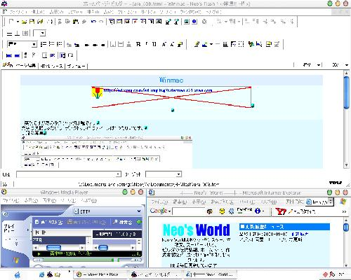

Winmac
当時の文章
でかいんでリンクにした。重いし。
これは管理人の (前の) デスクトップだよ。ビジュアルスタイルっていうソフトを使って、デザインをマックにしたのを取り込んで作った。なかなかいいでしょ？
突然だがあのデスクトップは全くの嘘。文字は英語じゃないし、デスクトップにはアイコンは1つもないんだ。これがいつもの感じ。そんなのはどうでもいいか (いいのか？)。とにかく、話を進めよう。

私は PC 雑誌で「ビジュアルスタイル」というものを知って、やってみたいと思った。20分程度で、このデザインにできた。そこで思った。「これってかっこよくない？」(ごく普通の感想)
翌日、この画面を再び見て思った。「これを Flash に取り込んだら…」そこから製作が始まった。製作の過程をまとめてみた。何か役に立てたらいいけど。
Winmac はこうして作られた！w
- まずは画面をキャプチャ。キーボードの BackSpace の右上にある「PrintScreen」を押すと、画面をコピーできる。
- ペイントで編集。「ペ、ペイント？」と思うかも知れないが、管理人はこれがいいんだ！保存は画質を保つため BMP 形式。
- Flash に取り込む。ここで1つ問題発生。管理人の PC の解像度は 1024×768。しかしこれだとブラウザで表示するとはみ出る！だから 800×600 に縮小 (もっと小さくすれば良かった)
- パーツごとにレイヤーで分け、ボタン形式にする。黒いマウスで切り取って、それを別レイヤーに置き、ボタン形式のシンボルにする。
- ボタン形式にしたシンボルの中の画像をシンボルにし、効果をつける。作っている途中で気付いたんだけど、ボタンに効果をつけるには、ボタンの中にある画像がシンボルでないといけなかったんだ。だからボタンの中にまたシンボルを作り、効果の「明度」や「着色」で編集した。
- ボタンのシンボルにリンクやフレーム指定のアクションを入れる。左下のメニューにはフレーム指定、その他はリンクを入れた。
- ムービーの最初を止めるため、新規レイヤーに「stop」のアクションを入れる。単体 (
swfファイルのみ) で動かした時のためにやっておく (やっておいてよかったw)。 - パブリッシュすれば…完成！
結構大変なのが分かったかな？
2019年に振り返ってみて
WindowsXP 時代のデスクトップを再現した Flash。当時は Visual Style などのソフトで MacOS 風のデザインにするのに凝っていた。
お小遣い稼ぎサイトで住所入力などを自動化するためによく使っていた「DrePos」、カッコ良いと思って入れるだけ入れていた Opera、Lunascape などのアイコンが見える。ホームページビルダーのアイコンは V6 か V6.5 かな。Flash 5 から Flash MX に完全移行したっぽい。IE6 には Google ツールバーと Yahoo! ツールバーがインストールされている。
当時としてはまぁまぁ力作だったと思う。800x600px というサイズも当時としては大きめだったので、ページ内には埋め込まず Flash ファイルへのリンクのみとしていた。